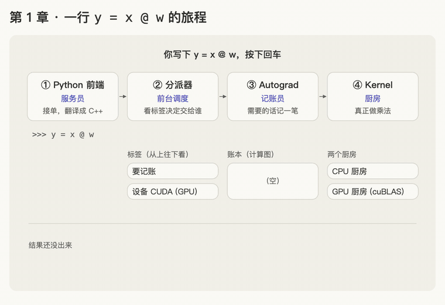
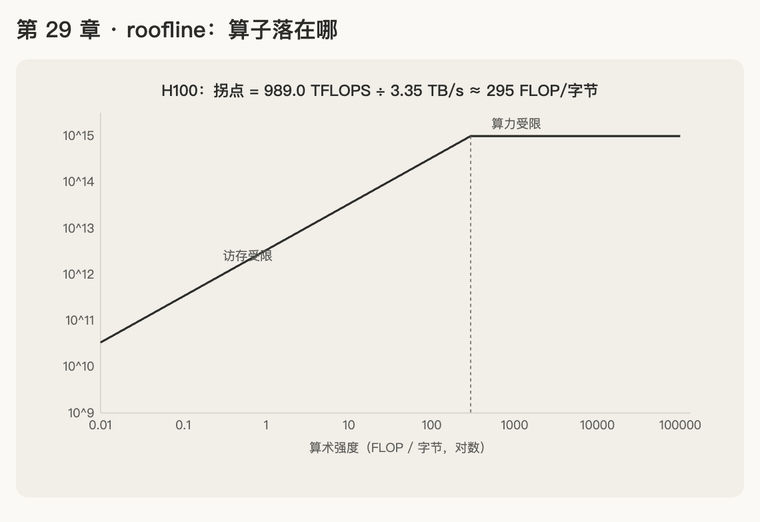

PyTorch 从里到外 · 讲义目录
36 章 · 36 个动画（GIF + 可交互页面）· 135 张复习卡片 · 36 个代码模块和 notebook，数字都在本机 torch 2.15.0 上跑过 · 覆盖 study-plan 阶段 A–F 的全部讲义章节
这本书讲什么
从"一行 y = x @ w 在 PyTorch 里经过了什么"讲起：Tensor 的内存布局、分派器、自动求导、GPU 的异步执行、torch.compile 的三道工序；然后是典型用法（Module、DataLoader、训练循环、存档）和常用算子；再到多机多卡（集合通信、DDP、FSDP2、DTensor 与张量并行、流水线 / 上下文 / 专家并行、分布式存档与排错）、训练性能调优（MFU、profiler、数据管道、混合精度、显存、CUDA Graph），最后是推理优化与融合算子开发（roofline、KV cache、读 Inductor 代码、Triton、注册自定义算子、C++ 扩展、量化与导出、benchmark 与正确性）。
- 适合谁：会写 Python、用过一点 PyTorch 的人。不需要事先懂 GPU 或分布式；要用到的数学只有求导的链式法则、指数和对数、矩阵乘法，都在用到的那一章现场讲。
- 读完能做什么：读懂 AISPE 第 13–14 章和 Ultra-Scale Playbook；做 CS336 a1 / a2（训练循环、DDP、FSDP、Triton FlashAttention）；拿到一个慢的训练脚本知道先量什么、改什么；写一个注册进 PyTorch、能被
torch.compile用的融合算子。 - 怎么读：按章顺序读。每章先看讲解和动画，再自己做练习，最后用复习卡片隔几天考自己。总地图 00-overview.md 适合先扫一遍知道全貌。
讲解的特点
- 一次一小步：每个概念按"白话类比 → 公式（每个符号说清楚怎么读）→ 小数字亲手算一遍"讲。
- 每章一个动画：关键原理做成可交互页面，▶ 播放、→ 单步、↺ 从头开始，开关和滑块切换不同情形；GIF 版直接嵌在正文里。
- 数字都是实测的：讲义里的输出、计时、文件大小都在本机（Mac，torch 2.15.0，CPU / MPS，分布式用 2 个 Gloo 进程）上跑过；需要 NVIDIA GPU 的部分标
[GPU]。 - 对照原文：讲到 AISPE、Ultra-Scale Playbook、多机报告的地方标了本地文本的行号；在线官方文档标〔在线〕。
- 保留真实的学习过程：练习与作答记录里是学习时的原话、对错和点评（目前除第 1 章外都待作答）。
- 术语不设门槛：缩写第一次出现就给英文全称并逐词解释，全书缩写见 缩写与术语表。
- 每章都有代码对照：讲义末尾"代码对照"一节对应
solutions/chapter-code/chNN_*.py，配测试核对和讲义一致、配 notebook 一格一格跑；只算讲过的例子，不提前给练习答案。 - 每章收尾有口诀：全部口诀汇总在本页末尾。
示例动画
 第 1 章 · PyTorch = GPU 上的 numpy + 自动记账；一行代码走四站 讲义 · ▶ 交互 |
 第 2 章 · Tensor = 一排数 + 说明书（shape / stride / offset）；view 不复制 讲义 · ▶ 交互 |
 第 6 章 · compile 三道工序：Dynamo 抄图 → AOTAutograd → Inductor 融合；断图与重编译 讲义 · ▶ 交互 |
 第 17 章 · 五个集合通信动词；ring all-reduce 每卡发约 2K 讲义 · ▶ 交互 |
 第 19 章 · ZeRO 1/2/3 显存账；FSDP2 层前拼、用完丢 讲义 · ▶ 交互 |
 第 29 章 · roofline；访存受限只看字节；融合实测带宽不变时间减半 讲义 · ▶ 交互 |
其他入口
- 复习卡片：../review.md（P01–P135，按六个阶段分类）
- 总地图：../00-overview.md（一页讲完七个方面，适合查）
- 学习计划与里程碑：../study-plan.md
- 缩写与术语表：appendix-glossary.md
- 代码与 notebook：../../solutions/chapter-code/
- 动画索引：../animations/README.md
全流程总览
你写的一行 Python 第 1 章
│ 前端 → 分派器（标签梯子）→ Autograd 记账 → kernel 第 3、4 章
│ Tensor = storage + stride（view 不复制） 第 2 章
│ GPU 上异步排队；同步点；显存仓库 第 5 章
│ eager 一步一单 ↔ compile：Dynamo → AOTAutograd → Inductor 第 6 章
▼
一个训练脚本：Module → DataLoader → 五行循环 → 存档 第 7–10 章
│ 张量操作：广播、索引散射、规约 / 矩阵乘、F、loss / AdamW 第 11–15 章
▼
扩到多卡：进程 → 集合通信 → DDP → FSDP2 → TP → PP/CP/EP → DCP 第 16–22 章
▼
调快：算账（MFU）→ profiler → 数据 / 同步 → 精度 → 显存 → compile / CUDA Graph 第 23–28 章
▼
推理与融合：roofline → KV cache → 读生成代码 → Triton → 注册算子 → C++ → 量化导出 → 测准 第 29–36 章
| 阶段 | 做什么 | 为什么 |
|---|---|---|
| A 核心机制（1–6） | 看清一行代码在 PyTorch 里发生了什么 | 后面所有调优都建立在"它到底做了什么"上 |
| B 典型用法（7–10） | 写出一个完整、可续训的训练脚本 | 这是每天在用的骨架 |
| C 常用算子（11–15） | 熟练操作形状、索引、规约、注意力和优化器 | 写模型和写 kernel 都离不开 |
| D 分布式（16–22） | 把一个模型扩到多卡、多机 | 大模型单卡放不下、训不完 |
| E 调优（23–28） | 量化瓶颈、按投入产出逐项优化 | 同样的卡，MFU 从 20% 到 50% 就是 2.5 倍 |
| F 推理与融合（29–36） | 理解为什么融合快，能自己写、注册、测一个融合算子 | 推理成本和定制算子的核心能力 |
目录
| 章 | 主题 | 一句话精要 | 动画 | 卡片 | 状态 |
|---|---|---|---|---|---|
| A · 核心机制 | |||||
| 01 | PyTorch 做了什么：一行 y = x @ w 的旅程 |
PyTorch = GPU 上的 numpy + 自动记账；一行代码走四站 | ▶ | P01–P02 | 已讲，练习待作答 |
| 02 | Tensor 内部：一块内存 + 一张"怎么读"的说明书 | Tensor = 一排数 + 说明书（shape / stride / offset）；view 不复制 | ▶ | P03–P05 | 已写，练习待作答 |
| 03 | 分派器：按标签一层层处理 | 标签梯子：Autocast → Autograd → 后端；Meta 只算形状 | ▶ | P06–P08 | 已写，练习待作答 |
| 04 | Autograd：账本怎么记、怎么倒着算 | 前向记节点、反向倒着乘；.grad 只累加；自定义 Function |
▶ | P09–P12 | 已写，练习待作答 |
| 05 | GPU 语义：下单就走、何时会等、显存怎么借 | GPU 异步：挂单就走；同步点、stream、缓存分配器 | ▶ | P13–P16 | 已写，练习待作答 |
| 06 | eager 与 graph：torch.compile 里面的三道工序 |
compile 三道工序：Dynamo 抄图 → AOTAutograd → Inductor 融合；断图与重编译 | ▶ | P17–P20 | 已写，练习待作答 |
| B · 典型用法 | |||||
| 07 | nn.Module：一棵自动登记参数的积木树 |
Module 自动登记参数；state_dict 是清单；train / eval 只切层的行为 | ▶ | P21–P23 | 已写，练习待作答 |
| 08 | Dataset 与 DataLoader：给 GPU 备菜的流水线 | Dataset 回答第 i 个是什么，DataLoader 管分批、拼盘、并行备菜 | ▶ | P24–P26 | 已写，练习待作答 |
| 09 | 训练循环：五行主干 + 三件护具 | 五行主干 + autocast + 梯度裁剪 + warmup / cosine | ▶ | P27–P30 | 已写，练习待作答 |
| 10 | 保存与加载：存清单、不存对象，断点要存全 | 存 state_dict 不存对象；weights_only；续训存全套（AdamW 三倍大） | ▶ | P31–P33 | 已写，练习待作答 |
| C · 常用算子 | |||||
| 11 | 形状与广播：从右往左对齐，1 可以拉伸 | 广播从右对齐；keepdim 防陷阱；拆头先 view 再 transpose | ▶ | P34–P36 | 已写，练习待作答 |
| 12 | 索引与散射：按掩码挑、按下标取、按下标写回 | mask 填 −∞；where 形状不变；gather 按号取，scatter_add 按号加回 | ▶ | P37–P40 | 已写，练习待作答 |
| 13 | 规约、矩阵乘与数值稳定 | dim 是被压扁的维；einsum；logsumexp 防溢出；bf16 累加卡在 256 | ▶ | P41–P44 | 已写，练习待作答 |
| 14 | nn.functional：归一化、激活与注意力 |
LayerNorm / RMSNorm、SwiGLU；SDPA 自动挑 Flash；FlexAttention | ▶ | P45–P49 | 已写，练习待作答 |
| 15 | 损失与优化器：cross_entropy 的细节和 AdamW 的一步 | cross_entropy 吃 logits；ignore_index；AdamW 一步怎么算 | ▶ | P50–P53 | 已写，练习待作答 |
| D · 分布式训练 | |||||
| 16 | 进程模型：一张卡一个进程，靠编号分工 | 每卡一进程；rank / local_rank / world_size；torchrun | ▶ | P54–P57 | 已写，练习待作答 |
| 17 | 集合通信：五个动词和它们的代价 | 五个集合通信动词；ring all-reduce 每卡发约 2K | ▶ | P58–P60 | 已写，练习待作答 |
| 18 | DDP：每卡一份模型，反向时边算边对答案 | DDP：广播参数 + 平均梯度；分桶重叠；no_sync | ▶ | P61–P63 | 已写，练习待作答 |
| 19 | FSDP2：每卡只存一片，用到时再拼 | ZeRO 1/2/3 显存账；FSDP2 层前拼、用完丢 | ▶ | P64–P67 | 已写，练习待作答 |
| 20 | DeviceMesh、DTensor 与张量并行 | DeviceMesh、DTensor 三种摆放；TP 先列切后行切 | ▶ | P68–P71 | 已写，练习待作答 |
| 21 | 流水线、上下文、专家并行，以及怎么组合 | 流水线气泡 (p − 1)/m、1F1B；CP、EP；五维组合 | ▶ | P72–P75 | 已写，练习待作答 |
| 22 | 分布式存档与排错：每卡存一片，卡死先查顺序 | DCP 每卡存一片；hang 多半是通信顺序不一致 | ▶ | P76–P79 | 已写，练习待作答 |
| E · 训练性能调优 | |||||
| 23 | 调优方法论：先算账，再测量，只改瓶颈 | 6N、MFU；四类瓶颈；改一处测一次 | ▶ | P80–P82 | 已写，练习待作答 |
| 24 | profiler：给训练拍一段"录像" | profiler：Self vs Total；fused AdamW 实测快 30% | ▶ | P83–P86 | 已写，练习待作答 |
| 25 | 让 GPU 别等：数据管道与同步点 | 等数据计时；四段数据路；揪出同步点；stream 预取 | ▶ | P87–P90 | 已写，练习待作答 |
| 26 | 混合精度：bf16、fp16、TF32、FP8 怎么选 | 指数管范围、尾数管精度；GradScaler；TF32；FP8 缩放 | ▶ | P91–P94 | 已写，练习待作答 |
| 27 | 显存：谁占了、怎么省、怎么看 | 显存四块；激活重计算 9.1 → 1.1 MB；memory snapshot | ▶ | P95–P98 | 已写，练习待作答 |
| 28 | 训练里用 compile 与 CUDA Graphs：消灭碎活和启动开销 | 40 个小算子 compile 快 8 倍；区域编译；CUDA Graph | ▶ | P99–P102 | 已写，练习待作答 |
| F · 推理优化与融合开发 | |||||
| 29 | 为什么融合能变快：算力受限与访存受限 | roofline；访存受限只看字节；融合实测带宽不变时间减半 | ▶ | P103–P106 | 已写，练习待作答 |
| 30 | 推理模式与 KV cache：生成一个 token 要做什么 | inference_mode；KV cache 原理与大小；decode 上限 = 带宽 ÷ 权重 | ▶ | P107–P111 | 已写，练习待作答 |
| 31 | 读 Inductor 生成的代码：它已经帮你融了什么 | 读 Inductor 生成代码：fused kernel 名、extern 调库 | ▶ | P112–P115 | 已写，练习待作答 |
| 32 | Triton 编程模型：一个 program 处理一块数据 | Triton：一个 program 管一块；offs、mask、load / store | ▶ | P116–P119 | 已写，练习待作答 |
| 33 | 注册自定义算子：让你的 kernel 成为 PyTorch 的"一等公民" | custom_op + register_fake + register_autograd + opcheck | ▶ | P120–P123 | 已写，练习待作答 |
| 34 | C++ / CUDA 扩展：TORCH_LIBRARY 把 C++ 函数登记进分派表 | TORCH_LIBRARY 加行、IMPL 填列；-O3；手写不自动赢 | ▶ | P124–P127 | 已写，练习待作答 |
| 35 | 量化与导出：模型变小、脱离 Python 部署 | 对称量化；weight-only；torch.export + AOTInductor | ▶ | P128–P131 | 已写，练习待作答 |
| 36 | benchmark 与正确性：测准、对齐、再上线 | 测准时间、有效带宽、assert_close 容差、测试矩阵 | ▶ | P132–P135 | 已写，练习待作答 |
后续大纲
全部 36 章已写完。下一步是逐章对话讲解、作答练习（作答记录写回各章），以及 study-plan 里的里程碑 P-M0–P-M7（本机）和 P-G1–P-G3（GPU）。
口诀汇总
第 1 章 · PyTorch 做了什么
numpy 只会炒，PyTorch 开餐厅：多个厨房（GPU），一个记账员（autograd）；
一行代码四站走：服务员接单，前台看标签，记账员记一笔，厨房来下锅。
第 2 章 · Tensor 内部
一排数加说明书：shape 说几行几列，stride 说一步跳几格，offset 说从哪开始；
view 只换说明书，转置跳着读不连续；stride 为 0 一份当多份。
第 3 章 · 分派器
张量身上贴标签，分派器按梯子往下传：
先混合精度，再记账，再版本登记，最后进厨房；
每层干完撕标签；加功能加一列，加算子加一行；Meta 只算形状不算数。
第 4 章 · Autograd
梯度是旋钮的敏感度，链式法则把每步倍数乘起来；
前向记节点，反向倒着走，结果存叶子；
.grad只会加，每步要清零；反向要用的数别原地改。
第 5 章 · GPU 语义
CPU 挂单就走，GPU 排队慢做；掐表之前先同步；
拿数回来就要等，item、if都是坎；
一条 stream 一条队，跨队用数先等待；显存仓库借了不还，在用和借来是两个数。
第 6 章 · eager 与 graph
eager 一步一单一趟显存，compile 三道工序：Dynamo 抄图，AOTAutograd 配反向，Inductor 融合写代码；
看张量的值走分支就断图，用 where 改；guards 不过就重编，形状在变编成动态。
第 7 章 · nn.Module
继承 Module 有 HR，赋给 self 自动登记；普通 list 不登记，要用 ModuleList；
模块成树、路径成名，state_dict 是名字到张量的清单；
train/eval 切层的行为，不管梯度；hook 是进出口的探头。
第 8 章 · Dataset 与 DataLoader
Dataset 管第 i 个是什么，DataLoader 管打乱分批拼盘；
长短不齐自己拼，补齐加 mask；
worker 数 ≥ 读一批 ÷ 训一步，pin_memory 配 non_blocking；多卡 DistributedSampler，每轮 set_epoch。
第 9 章 · 训练循环
前向、loss、清梯度、反向、更新；清梯度只要在反向前；
autocast 包前向，矩阵走 bf16；裁剪放在反向和更新之间，方向不变只缩长；
学习率先升后余弦降，调度跟在更新后。
第 10 章 · 保存与加载
存清单不存对象，先建结构再填数；
pickle 会执行代码，weights_only 只收纯数据；
续训存全套：模型、优化器、调度、步数、随机数，AdamW 存档三倍大。
第 11 章 · 形状与广播
广播从右往左对，相等或者有一个 1；1 会拉伸不复制；
恰好对上最危险，规约记得 keepdim；
拆头先切最后维，再用 transpose 换位置；einops 读代码就是读形状。
第 12 章 · 索引与散射
mask 填负无穷，softmax 后正好是零；
where 三选一形状不变，布尔索引长度看数据；
gather 按号取，scatter_add 按号加回，topk 给值又给号。
第 13 章 · 规约、矩阵乘与数值稳定
dim 是被压扁的那一维，keepdim 留位置；
矩阵乘算 2mkn，einsum 两边都有的留下、只在左边的求和；
logsumexp 先减最大，exp 就不爆；存可以低精度，累加要用 fp32。
第 14 章 · nn.functional
有参数用 nn，纯计算用 F；LayerNorm 减均值除标准差，RMSNorm 只除均方根；
GELU、SiLU 是平滑 ReLU，SwiGLU 门乘线性再投影；
attention 用 SDPA，自动挑 Flash 不写 T 方表；想改规则写小函数，Flex 编成 kernel。
第 15 章 · 损失与优化器
cross_entropy 吃 logits 别先 softmax，算的是负 log 正确概率；
语言模型拍平再算，补齐位 ignore_index；
AdamW 先衰减，再用惯性除以平时梯度，首步约等学习率；fused 一个 kernel，bias 和 norm 不衰减。
第 16 章 · 进程模型
一卡一进程，同一份脚本，靠编号分工；
world_size 总人数，rank 全局号，local_rank 定用哪张卡，rank 0 管日志；
torchrun 起进程发编号、主节点会合；GPU 用 NCCL，Sampler 隔着分，每轮 set_epoch。
第 17 章 · 集合通信
all_reduce 加起来人人有，all_gather 拼起来人人有，reduce_scatter 加完各拿一段，broadcast 一份发全体；
大家同序调用，少一个就卡死；all_reduce 拆成两半，FSDP 在中间做事；
ring 每卡发两倍 K，几乎不随卡数涨。
第 18 章 · DDP
每卡一份模型吃不同数据，梯度平均一起改；
包装时广播参数，反向时 all_reduce 取平均，更新各自做；
梯度好一桶发一桶，通信藏在计算后；累积前几步 no_sync，参数没进 loss 要报错。
第 19 章 · FSDP2
混合精度每参十六字节，DDP 人人一整套；
ZeRO 一切优化器、二再切梯度、三连参数也切，三级每卡十六 Ψ 除以 N；
层前拼、用完丢、反向后梯度 reduce_scatter；从下往上逐层套，机内切、机间复制叫 HSDP。
第 20 章 · DeviceMesh、DTensor 与张量并行
mesh 把卡排成表，每一维一种并行一个组；
DTensor 三种摆：Shard 切开、Replicate 复制、Partial 部分和，换摆法就是通信；
TP 先列后行，中间不传、最后一次 all_reduce；只在机内用，SP 再把 norm 按序列切。
第 21 章 · 流水线、上下文、专家并行，以及怎么组合
按层切成流水线，段间传激活；一个 batch 气泡大，p − 1 倍在空等；
切成 m 个小批，气泡降到 (p − 1) / m；1F1B 前反交替，激活不随 m 涨；
序列太长 CP 绕圈传 KV，专家分卡 all_to_all；最勤的通信放机内，最疏的放外层。
第 22 章 · 分布式存档与排错
分布式存档每卡存一片，元数据记位置，换卡数照样读；save、load 人人都要调；
卡死多半是通信次数顺序不一致：条件分支、提前退出、只让 rank 0 调；
先设超时，再开 DETAIL，py-spy 看停在哪，NCCL_DEBUG 看网络。
第 23 章 · 调优方法论
每个 token 六倍参数：前向二、反向四；
MFU 等于六 N 乘吞吐，除以卡数乘峰值；dense 五成好，MoE 四成一流；
闲着、访存、算、通信，先看时间线；改一处测一次，别忘对 loss。
第 24 章 · profiler
profile 加 schedule，跳过热身只录稳定步；record_function 起名字，trace 拖进 perfetto；
Self 是自己干、Total 含子孙，Total 大 Self 小底下全是碎活；
找最大的块改一处再测；时间线上找空白、找细条、找没藏住的 NCCL。
第 25 章 · 让 GPU 别等
先拆两段计时，数据不慢别瞎改；
读取、处理、拼盘、拷贝四段路，能离线就离线，能并行就并行，拷贝用 pin 加 non_blocking；
同步点藏在日志和指标里，sync_debug_mode 帮你找；第二条 stream 提前拷下一批。
第 26 章 · 混合精度
指数管范围、尾数管精度；bf16 宽而粗，fp16 细而窄；
fp16 梯度会下溢，GradScaler 先放大再除回；bf16 不用 scaler，累加记得用 fp32；
fp32 一行开 TF32；FP8 再快一倍，靠缩放系数，粒度越细越稳。
第 27 章 · 显存
显存四块：模型状态十六 Ψ、激活随 b s h L、临时和碎片；长序列激活比参数大；
重计算只存每块输入，反向再跑一遍前向，多三分之一算力；
OOM 先录快照看是谁；bf16、Flash、减 batch、重计算、FSDP，offload 最后。
第 28 章 · 训练里用 compile 与 CUDA Graphs
小算子多时下单比做菜贵，compile 融合减单数；
大模型按块区域编，同构只编一次，变长输入补齐分桶；
CUDA Graph 录一次套餐号，形状地址要固定、不能同步和新分配；reduce-overhead 自动录；细条加空隙就该上。
第 29 章 · 为什么融合能变快
时间看两笔：算的和搬的，谁大谁是瓶颈；算术强度低于拐点就是访存受限；
矩阵乘吃算力，其余算子吃带宽，时间只看读写字节；
融合不让中间结果落显存，带宽不变字节减半时间减半；手写之前先算离理论最快还差多少。
第 30 章 · 推理模式与 KV cache
推理开 eval 加 inference_mode：切层的行为、关记账和版本号；
因果 attention 旧 KV 不变，存进 cache 每步只算新 token；
每 token cache 是 2 乘层乘 KV 头乘头维乘字节，GQA 共享省几倍；
prefill 吃算力、decode 吃带宽，上限是带宽除以权重字节；静态 cache 才能录 CUDA Graph。
第 31 章 · 读 Inductor 生成的代码
拿代码：run_and_get_code、output_code、COMPILE_DEBUG；
名字里列着融进去的算子，矩阵乘走 extern 调库；
数 kernel、数 buf、找 clone；改算法级的融合，compile 不会，用库或手写。
第 32 章 · Triton 编程模型
CUDA 写一个线程，Triton 写一个 program 管一块；
program_id 定位，arange 拿下标，mask 挡越界，load、store 整块读写；
grid 向上取整；行规约一行一个 program，越界补不影响结果的值；块大小交给 autotune。
第 33 章 · 注册自定义算子
直接调用没人认，注册进分派表才算正式算子；
custom_op 写签名、声明改了谁，register_fake 只报形状，compile、export 才能用；
register_autograd 存东西给梯度；opcheck 查注册，assert_close 查数值；Triton 用 triton_op，编译器看得进去。
第 34 章 · C++ / CUDA 扩展
先 compile、再 Triton，要 CUTLASS、PTX、包装库才写 C++；
实现 + TORCH_LIBRARY 加一行 + TORCH_LIBRARY_IMPL 按设备填一列，fake 和反向 Python 里补；
load_inline 学习、setup.py 发布，ninja 要在 PATH；-O3 先写对，手写不自动赢，三方实测再定。
第 35 章 · 量化与导出
量化是粗尺子加系数：s 等于最大绝对值除以 127，存 round(w/s)，用时乘回 s；
位数越少格子越粗，int4 要分组；decode 吃带宽，weight-only 最划算；
export 抓整图、抓不下就报错，Dim 声明会变的维；AOTInductor 提前编成 .pt2，C++ 也能跑。
第 36 章 · benchmark 与正确性
测时间：先热身、要同步、多次取中位、线程数一致，GPU 用 do_bench；
有效带宽是必须字节除以时间，和峰值比才知好坏；
对数值：assert_close 按 dtype 定容差，参考用高精度、反向也要比；
测试矩阵别偷懒：不整除、不连续、边界值、compile 里也要跑；发现、判断、写、注册、验、测、接、守。